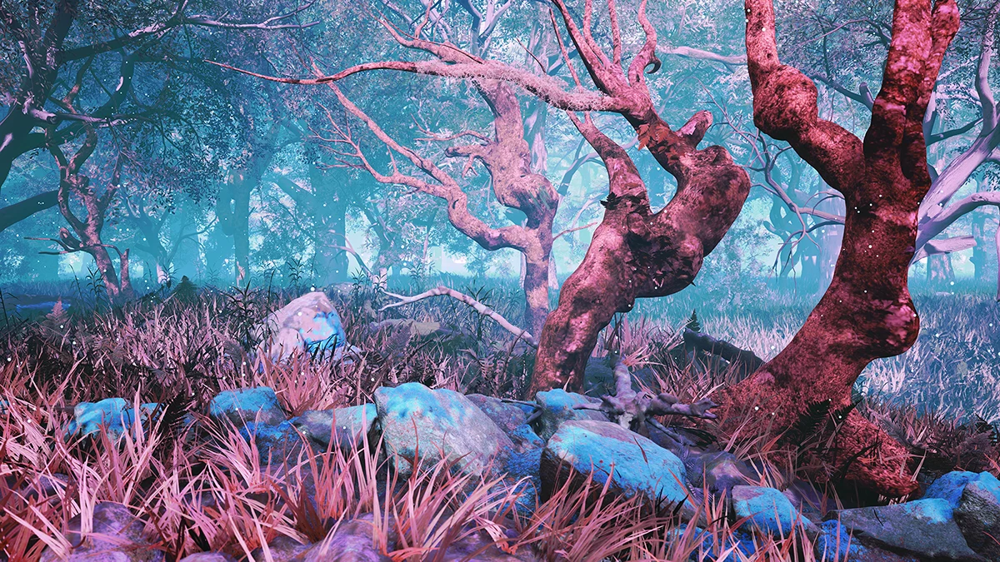
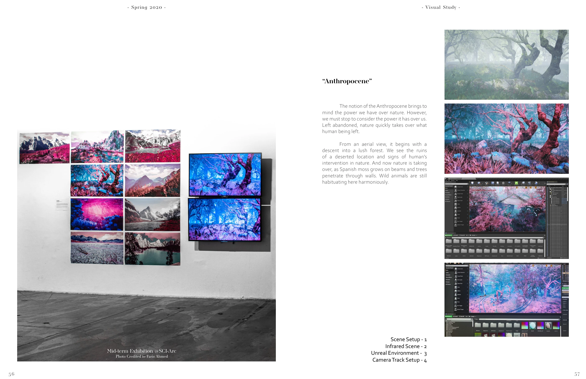
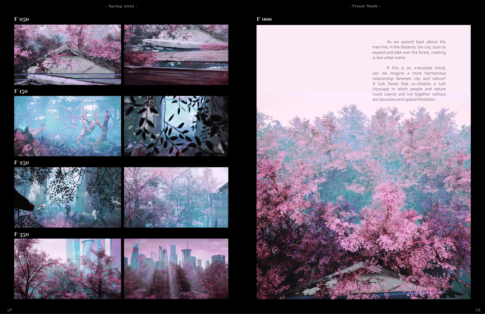

inVisible!
A journey through an abandoned landscape reclaimed by nature, exploring the shifting boundary between the built world and the living world.
Collaboration with Faris Ahmed · SCI-Arc, Spring 2020 · Instructors: Elena Manferdini and Andrea Cadioli · Exhibition photograph: Faris Ahmed
Maya · Unreal Engine 4
Nominated & exhibited · CityX Architecture Biennale, 2021 · inVisible — Anthropocene

A landscape taking over
Moss occupies beams and trees pass through walls. Scene construction, camera planning, and infrared color studies turn the idea of the Anthropocene into a spatial experience.

Moving through the forest
A sequence of frames follows the camera through the environment. Color, vegetation, and signs of human intervention shape the atmosphere.


A film excerpt.
A selected sequence from the project.